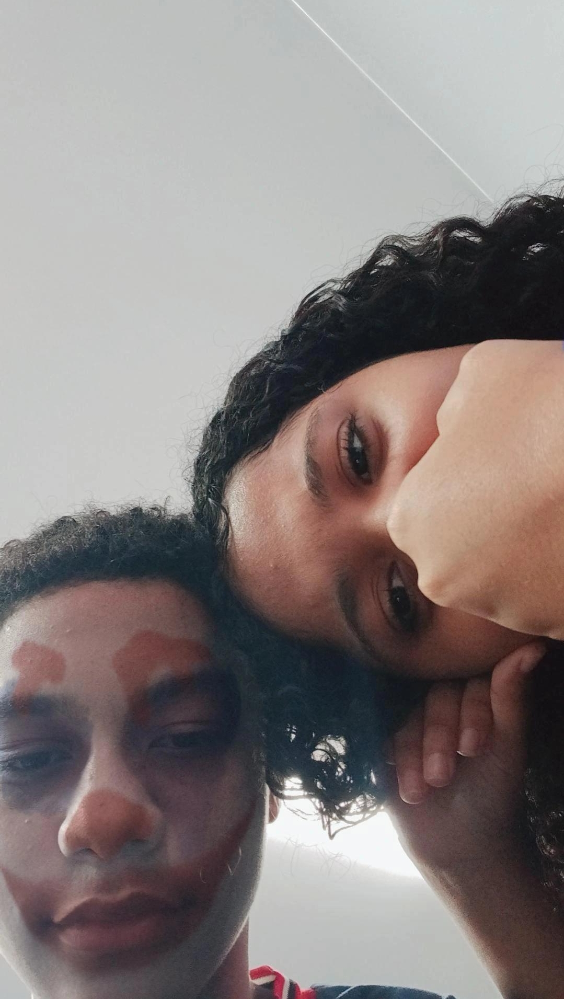

Não sei como você gostaria de ser chamada nessa carta, desculpa se estou sendo muito chato nesses últimos dias, vou entender se depois dessa carta você quiser parar de falar comigo.
Fiz essa carta tem uns dias, estava fazendo ela de pouco em pouco, escrevendo por dia. Me inspirei na que você fez, que você foi escrevendo conforme os dias.
Eu sinto muita saudade de como a gente era antes, sei que talvez não volte. Não se sinta odiada por minha parte depois do término. Eu não tenho raiva alguma de você e sinto muito por fazer você estar passando por esse momento difícil. Sinto muito por ter feito você se apaixonar por mim e logo em seguida ter ido embora. Mas o sentimento que eu sinto por você foi o mais puro que eu já senti na vida.
Eu ficava feliz de ter alguém ao meu lado em quem podia confiar, rir, contar piadas sem graça ou até mesmo falar sobre coisas do dia a dia. Nos meus planos era para estar te entregando uma carta parecida com essa dentro de um buquê de rosas, mas não deu tempo. Acho que cheguei a falar isso com você em algum momento.
Eu só queria que você soubesse que eu te amo muito, muito mesmo, do fundo do meu coração. Embora a gente não esteja mais juntos, eu queria poder te ver uma última vez. Te entendo se quiser recusar esse pedido. Se você quiser me bloquear por ficar te mandando mensagem o dia todo, tudo bem.
Com muito carinho:
Seu ex Enzo 💜
